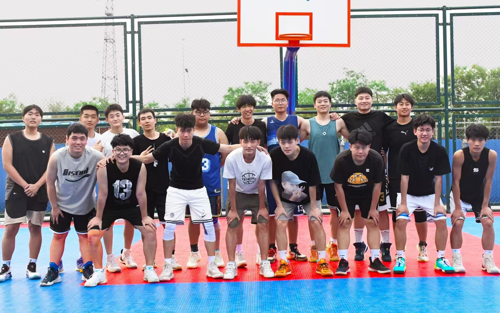
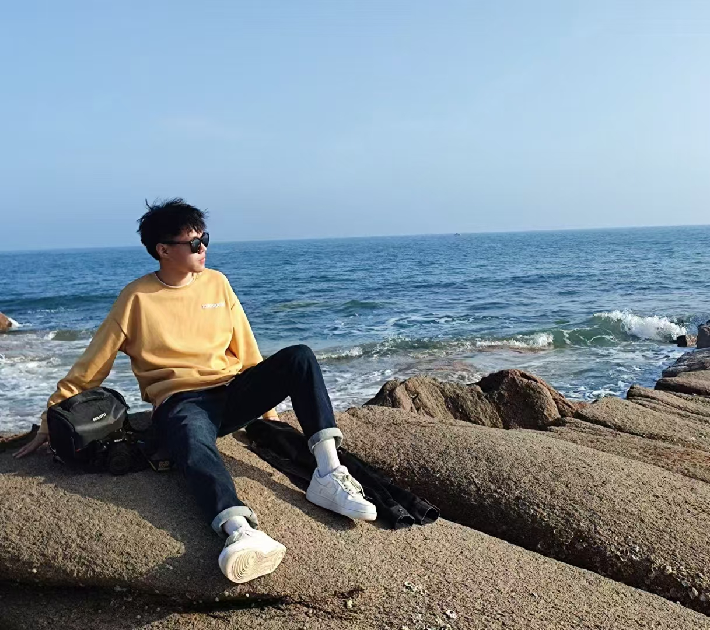
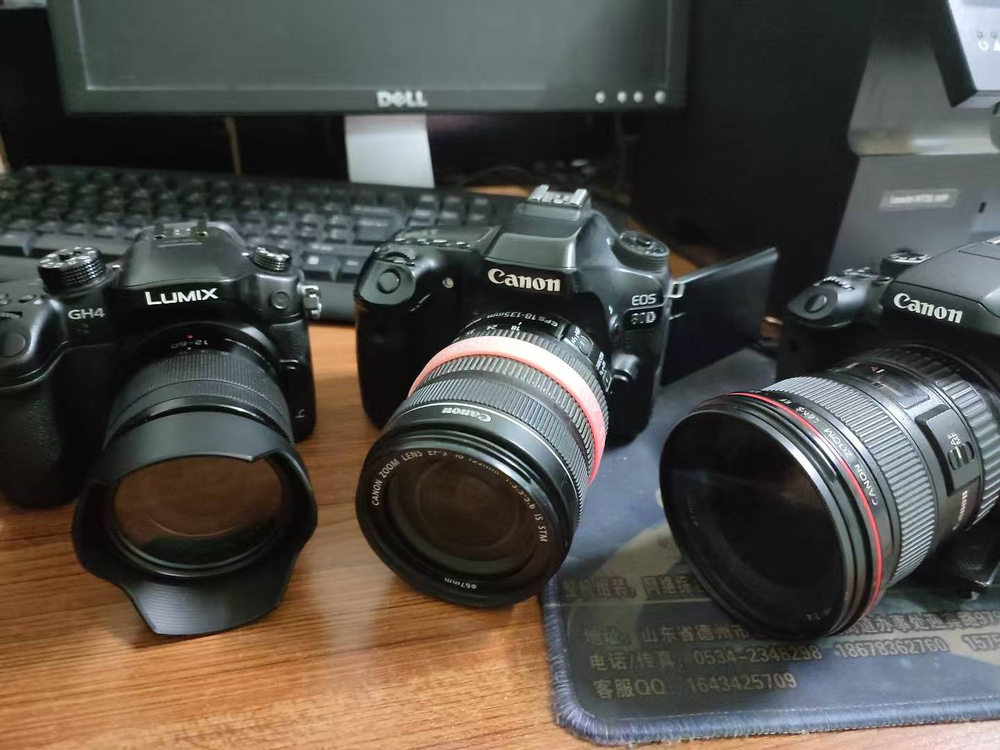

大家好，我叫[徐杰宸]。这是我做的网页，虽然比较简单，但是希望能够让你了解到我。
目前工作： 我目前主要负责政务云以及会议保障的工作。
工作方向：
希望可以多接触一些关于系统架构设计方向的内容。系统架构设计与项目管理、测试、运维等部门密切合作。与项目管理部门共同制定项目计划和时间表，确保架构设计任务能在规定时间内完成；与测试部门沟通测试策略，明确系统的关键性能和功能测试点；和运维部门合作，提供系统部署和维护所需的架构信息，如服务器配置要求、部署拓扑等。我的爱好： 我的爱好是摄影和篮球，期待有共同爱好的朋友可以在周末时间一起扫街和打球，期待假期可以与大家一起玩耍，以下是一些介绍图片。
  